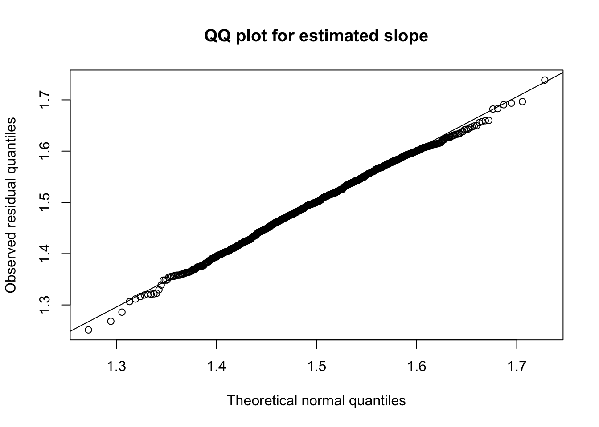
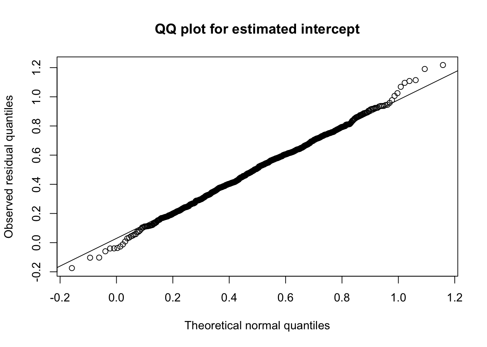

set.seed(3235)
# simulation settings
b <- 5
beta <- c(0.5, 1.5)
sigma2 <- 1
n <- 100
# generate x and y
X <- cbind(1, runif(n, 0, b))
y <- as.numeric(X %*% beta + rnorm(n, sd = sqrt(sigma2)))
# fit the model
m1 <- lm(y ~ X[,2])Class activity solutions
Asymptotic normality for regression coefficients
Suppose that \((\mathbf{x}_1, Y_1), ..., (\mathbf{x}_n, Y_n)\) are iid from the linear regression model
\[ \begin{aligned} Y_i | \mathbf{x}_i & \sim N(\mu_i, \sigma^2) \\ \mu_i &= \mathbf{x}_i^T \boldsymbol{\beta} \end{aligned} \] The MLE is \(\widehat{\boldsymbol{\beta}} = (\mathbf{X}^T \mathbf{X})^{-1} \mathbf{X}^T \mathbf{y}\). Asymptotic normality of the MLE means that
\[\sqrt{n}(\widehat{\boldsymbol{\beta}} - \boldsymbol{\beta}) \overset{d}{\to} N(\mathbf{0}, \mathcal{I}^{-1}_1(\boldsymbol{\beta}))\]
We showed in class that for this linear regression model, the Fisher information for a single observation is
\[\mathcal{I}_1(\boldsymbol{\beta}) = \frac{1}{\sigma^2} \mathbb{E}[\mathbf{x}_i\mathbf{x}_i^T]\]
Questions
Suppose that our data come from the model
\[Y_i = \beta_0 + \beta_1 X_i + \varepsilon_i, \hspace{0.5cm} \varepsilon_i \overset{iid}{\sim} N(0, \sigma^2)\] That is, \(\boldsymbol{\beta} = (\beta_0, \beta_1)^T\) and \(\mathbf{x}_i = (1, X_i)^T\). Also suppose that \(X_i \overset{iid}{\sim} Uniform(0, b)\). (There is no general assumption that our explanatory variables are uniform, but we need to pick some distribution for the simulation).
- Show that, if \(X_i \sim Uniform(0, b)\), then \(\mathbb{E}[\mathbf{x}_i \mathbf{x}_i^T] = \begin{bmatrix} 1 & \frac{b}{2} \\ \frac{b}{2} & \frac{b^2}{3}\end{bmatrix}\)
Solution:
\[\mathbf{x}_i \mathbf{x}_i^T = \begin{bmatrix}1 & X_i \\ X_i & X_i^2 \end{bmatrix}\]
For \(X_i \sim Uniform(0, b)\), the mean is \(\mathbb{E}[X_i] = b/2\) and the variance is \(Var(X_i) = b^2/12\), so \(\mathbb{E}[X_i^2] = b^2/12 + b^2/4 = b^2/3\). (Alternatively, we could calculate the moments directly by integrating). Therefore
\[\mathbb{E}[\mathbf{x}_i \mathbf{x}_i^T] = \begin{bmatrix} 1 & \frac{b}{2} \\ \frac{b}{2} & \frac{b^2}{3}\end{bmatrix}\]
Simulation
The following code simulates \(n = 100\) observations from this linear regression model with \(\beta_0 = 0.5\), \(\beta_1 = 1.5\), \(\sigma^2 = 1\), and \(b = 5\):
The variance-covariance matrix for \(\widehat{\boldsymbol{\beta}}\) is
\[Var(\widehat{\boldsymbol{\beta}}) = \frac{1}{n} \mathcal{I}_1^{-1}(\boldsymbol{\beta}) = \frac{\sigma^2}{n} (\mathbb{E}[\mathbf{x}_i \mathbf{x}_i^T])^{-1}\] and the estimated variance-covariance matrix is
\[\widehat{Var}(\widehat{\boldsymbol{\beta}}) = \dfrac{\widehat{\sigma}^2}{n} \left( \frac{1}{n} \sum \limits_{i=1}^n \mathbf{x}_i \mathbf{x}_i^T \right)^{-1} = \dfrac{\widehat{\sigma}^2}{n} \left( \frac{1}{n} \mathbf{X}^T\mathbf{X} \right)^{-1} = \widehat{\sigma}^2 (\mathbf{X}^T\mathbf{X})^{-1}\]
- For the simulated data above, calculate the estimated variance-covariance matrix \(\widehat{Var}(\widehat{\boldsymbol{\beta}})\). (You can get \(\widehat{\sigma}\) from
summary(m1)$sigma).
Solution:
summary(m1)$sigma^2 * solve(t(X) %*% X) [,1] [,2]
[1,] 0.05748902 -0.017322149
[2,] -0.01732215 0.006308233- Check that the estimate from question 2 is close to the true value \(\frac{\sigma^2}{n} (\mathbb{E}[\mathbf{x}_i \mathbf{x}_i^T])^{-1}\).
Solution:
x_xt <- matrix(c(1, b/2, b/2, b^2/3), ncol=2)
solve(x_xt)/n [,1] [,2]
[1,] 0.040 -0.0120
[2,] -0.012 0.0048- You can also calculate the estimated variance-covariance matrix in R with
vcov(m1). Verify that the matrix in R is the same as the matrix you calculated yourself in question 2.
Solution:
vcov(m1) (Intercept) X[, 2]
(Intercept) 0.05748902 -0.017322149
X[, 2] -0.01732215 0.006308233Distribution
- Repeat the provided code many times, generating many different samples from the distribution. Store the estimates \(\widehat{\beta}_0\) and \(\widehat{\beta}_1\) from each repetition, and use them to approximate \(Var(\widehat{\beta}_0)\), \(Var(\widehat{\beta}_1)\), and \(Cov(\widehat{\beta}_0, \widehat{\beta}_1)\). Check that these values agree with the true values in \(\frac{\sigma^2}{n} (\mathbb{E}[\mathbf{x}_i \mathbf{x}_i^T])^{-1}\).
Solution:
nsim <- 1000
beta0_ests <- rep(NA, nsim)
beta1_ests <- rep(NA, nsim)
for(i in 1:nsim){
X <- cbind(1, runif(n, 0, b))
y <- as.numeric(X %*% beta + rnorm(n, sd = sqrt(sigma2)))
m1 <- lm(y ~ X[,2])
beta0_ests[i] <- coef(m1)[1]
beta1_ests[i] <- coef(m1)[2]
}
var(beta1_ests) # close to 0.0048[1] 0.005069559cov(beta0_ests, beta1_ests) # close to -0.012[1] -0.01247926var(beta0_ests) # close to 0.04[1] 0.04062198- Confirm (e.g., by using a QQ plot) that the distributions of \(\widehat{\beta}_0\) and \(\widehat{\beta}_1\) are approximately normal.
Solution:
qqplot(qnorm(ppoints(nsim), mean=beta[2], sd=sqrt(0.0048)),
beta1_ests, xlab = "Theoretical normal quantiles",
ylab = "Observed residual quantiles",
main = "QQ plot for estimated slope")
qqline(beta1_ests,
distribution = function(p) qnorm(p, mean=beta[2], sd=sqrt(0.0048)))
qqplot(qnorm(ppoints(nsim), mean=beta[1], sd=sqrt(0.04)),
beta0_ests, xlab = "Theoretical normal quantiles",
ylab = "Observed residual quantiles",
main = "QQ plot for estimated intercept")
qqline(beta0_ests,
distribution = function(p) qnorm(p, mean=beta[1], sd=sqrt(0.04)))
For both \(\widehat{\beta}_0\) and \(\widehat{\beta}_1\), the distributions of the estimates from simulated data appear close to normal (the points in our QQ plot fall close to the diagonal line).